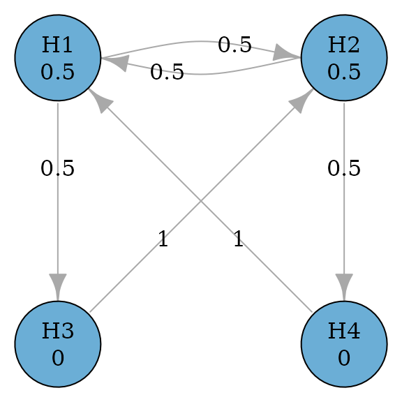

Rationales to generate the closure and the weighting strategy of a graph
Source:vignettes/generate-closure.Rmd
generate-closure.RmdMotivating example
Consider a simple successive graph with four hypotheses. It has two primary hypotheses and and two secondary hypotheses and . Initially, hypothesis weights are split equally between and with 0.5. Hypotheses and receive 0 hypothesis weights because is tested only if is rejected. Thus there is an edge from to with a transition weight of 1. When both and are rejected, their hypothesis weights are propagated to ; similarly, when both and are rejected, their hypothesis weights are propagated to . Thus there is an edge from to with a transition weight of 1. A graphical multiple comparison procedure is illustrated below.

Generating the closure
The closure of this multiple comparison procedure is a collection of
intersection hypotheses
,
,
,
,
,
and
.
In other words, these intersection hypotheses consist of intersections
based on all non-empty subsets of
,
e.g.,
,
,
,
,
.
Thus there are
intersection hypotheses. An equivalent way to generate all intersection
hypotheses is to use a binary representation. For example, the
intersection hypothesis
corresponds to
and
corresponds to
.
Then the closure can be indexed by the power set of
as below. In general, one can use
rev(expand.grid(rep(list(1:0), m))) to general the closure,
where
is the number of hypotheses.
#> H1 H2 H3 H4
#> 1 1 1 1 1
#> 2 1 1 1 0
#> 3 1 1 0 1
#> 4 1 1 0 0
#> 5 1 0 1 1
#> 6 1 0 1 0
#> 7 1 0 0 1
#> 8 1 0 0 0
#> 9 0 1 1 1
#> 10 0 1 1 0
#> 11 0 1 0 1
#> 12 0 1 0 0
#> 13 0 0 1 1
#> 14 0 0 1 0
#> 15 0 0 0 1Calculating the weighting strategy
Given the closure, one can calculate the hypothesis weight associated with every hypothesis in every intersection hypothesis using Algorithm 1 (Bretz et al. 2011). The whole collection of hypothesis weights is called a weighting strategy. For example, hypothesis weights are for the intersection hypothesis . Then hypothesis weights for the intersection hypothesis are , which can be calculated by removing from the initial graph and applying Algorithm 1 (Bretz et al. 2011). The algorithm calculates hypothesis weights in a step-by-step fashion. For example, for the intersection hypothesis , it can start from and calculates hypothesis weights for by removing and then calculates hypothesis weights for by removing ; it can also start from (assuming its hypotheses weights are stored) and calculates hypothesis weights for by removing . Therefore, there are two strategies to calculate the weighting strategy.
#> H1 H2 H3 H4
#> 1 0.50 0.50 0.00 0.00
#> 2 0.50 0.50 0.00 0.00
#> 3 0.50 0.50 0.00 0.00
#> 4 0.50 0.50 0.00 0.00
#> 5 0.75 0.00 0.00 0.25
#> 6 1.00 0.00 0.00 0.00
#> 7 0.75 0.00 0.00 0.25
#> 8 1.00 0.00 0.00 0.00
#> 9 0.00 0.75 0.25 0.00
#> 10 0.00 0.75 0.25 0.00
#> 11 0.00 1.00 0.00 0.00
#> 12 0.00 1.00 0.00 0.00
#> 13 0.00 0.00 0.50 0.50
#> 14 0.00 0.00 1.00 0.00
#> 15 0.00 0.00 0.00 1.00Approach 1: Simple approach
The first strategy utilizes the initial graph as the starting point
and calculates hypothesis weights for all other intersection hypotheses.
For example, to calculate hypothesis weights for
,
it will start with the intersection hypothesis
and sequentially remove
and
(or in the other order). This approach is simple to implement since
hypothesis weights for
are determined by the initial graph and always available. This approach
is similar to the one implemented in the gMCP R package.
The drawback is that it does not use other information to reduce the
number of calculations. For example, it is possible that hypothesis
weights for
have been calculated when calculating for
.
Using the information from
would only need the one-step calculation, compared to the two-step
calculation using
.
Approach 2: Parent-child approach
This approach tries to avoid the drawback of Approach 1 by saving
intermediate graphs. Then it only performs one-step calculation which
could save time. In general, an intersection hypothesis has a parent
intersection hypothesis, which involves all hypotheses involved in the
first intersection and has one extra hypothesis. For example, the second
row of matrix_intersections is
and its parent intersection is
in the first row; the third row of matrix_intersections is
and its parent intersection is
in the first row. Thus we can identify the parent intersection
hypothesis for each row in matrix_intersections (except row
1) as the row number 1, 1, 2, 1, 2, 3, 4, 1, 2, 3, 4, 5, 6, 7. Given
this sequence of parent hypotheses, it is simple to obtain hypothesis
weights for an intersection hypothesis based on its parent intersection
hypothesis via one-step calculation.
It is of interest to understand this pattern and obtain it
efficiently. First, between the bottom half (rows 9 - 15) and top half
(rows 1 - 7), each row’s parent in the bottom half is the corresponding
row in the top half, eight rows up, because the only difference is the
flipping of
from 1 in the top half to 0 in the bottom half. For example, row 15’s
parent is in row 15 - 8 = 7. Using this observation, we can determine
parent hypotheses for rows from 9 to 15 as 1, 2, 3, 4, 5, 6, 7. A
similar pattern can be observed for rows from 5 to 8. Their parent
hypotheses are in rows 1, 2, 3, 4, respectively, by flipping
from 1 to 0. For rows 3 - 4, their parent hypotheses are in rows 1, 2,
respectively, by flipping
from 1 to 0. Lastly for row 2, its parent hypothesis is in row 1. The
row number of the parent hypothesis can be efficiently generated by
running
do.call(c, lapply(2^(seq_len(m) - 1), seq_len))[-2^m, ],
where
is the number of hypotheses.
Comparing different approaches to calculating weighting strategies
To benchmark against existing approaches to calculating weighting
strategies, we compare the following approaches:
gMCP::generateWeights() (Rohmeyer
and Klinglmueller 2024), lrstat::fwgtmat() (Lu 2016), Approach 1 (graphicalMCP simple) and
Approach 2 (graphicalMCP parent-child). Random graphs are generated for
the numbers of hypotheses of 4, 8, 12, and 16. Computing time (in median
log-10 milliseconds) is plotted below. We can see that
gMCP::generateWeights() is the slowest and
lrstat::fwgtmat() is the fastest. Approach 2 (graphicalMCP
parent-child) is faster than Approach 1 (graphicalMCP simple). Note that
lrstat::fwgtmat() implements the calculation using C++,
which is known to be faster than R. But it is less stable than other
approaches, e.g., giving errors more often than others. Given that the
computing time of R-based approaches is acceptable, adding Rcpp
dependency is not considered in graphicalMCP. For these
considerations, we implement Approach 2 in
graphicalMCP::graph_generate_weights().

Improving power simulations using parent-child relationships
Conventional approach for power simulations
The conventional approach for power simulations is to repeat the following process many times, e.g., 100,000 times.
- Simulate a set of p-values
- Run the graphical multiple comparison procedure to
- Determine which hypothesis can be rejected
- Remove the rejected hypothesis and update the graph
- Repeat until no more hypotheses can be rejected
Note that the same step to update the graph may repeat in many replications, which may be repetitive. For hypotheses, there are at most graphs depending on which hypotheses are rejected. These graphs correspond to the closure and the weighting strategy. Thus an idea to avoid redundant updating of graphs is to utilize the weighting strategy.
Power simulations using parent-child relationships
The key to allow this approach is to efficiently identify the row of
the weighting strategy, given which hypotheses are rejected. Remembering
the pattern we found for Approach 2, the bottom half (rows 9 - 15) of
matrix_intersections is the same as the top half (rows 1 -
7), except flipping
from 1 to 0. This means that if
has not been rejected (1 for
in matrix_intersections), the row number of that index
should be in the top half. For example, assume that
and
have been rejected and the index in matrix_intersections
should be
.
Since
is 1, the corresponding row should be in the top half (rows 1- 7). But
is 0 and thus the corresponding row should be in the bottom half within
the top half (rows 5 - 7). Since
is 1 and thus the corresponding row should be in the top half (rows 5 -
6). But
is 0 and thus the corresponding row should be 6. A useful way to
calculate the row number for an index of XXXX is
2^m - sum(XXXX * 2^(m:1 - 1)). For example for XXXX=1010,
its row number should be
(1 - 1) * 8 + (1 - 0) * 4 + (1 - 1) * 2 + (1 - 0) * 1 + 1 = 16 - 10 = 6.
With the above way of efficiently identifying rows of
weighting_strategy, power simulations could be implemented
as follows:
- Obtain the weighting strategy (once for all simulations)
- Simulate a set of p-values
- Run the graphical multiple comparison procedure to
- Determine which hypothesis can be rejected
- Remove the rejected hypothesis and identify the row of the weighting strategy
- Repeat until no more hypotheses can be rejected
The small modification in Step 3b makes this approach much faster than the conventional approach for power simulations.
Comparing different approaches to power simulations
To benchmark against existing approaches to calculating weighting
strategies, we compare the following approaches:
gMCP::calcPower(), Approach 1 (graphicalMCP conventional),
and Approach 2 (graphicalMCP parent-child). Both Holm and fixed sequence
procedures are considered with the numbers of hypotheses of 4, 8, 12,
and 16. Computing time (in median log-10 seconds) is plotted below. We
can see that gMCP::calcPower() is the fastest and Approach
1 (graphicalMCP conventional) is the lowest. Note that
gMCP::calcPower() implements the simulation using C, which
is known to be faster than R but is not easy to extend to other
situations. Given that the computing time of Approach 2 (graphicalMCP
parent-child) is acceptable, we implement it in
graphicalMCP::graph_calculate_power().